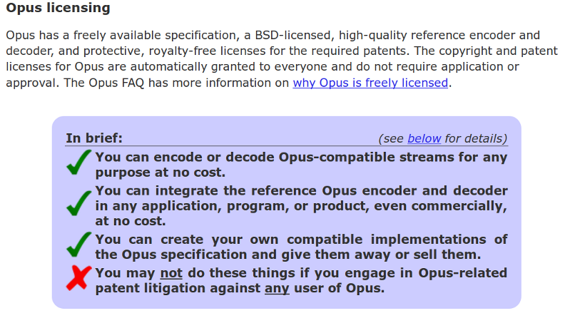

感謝您對「自由軟體鑄造場」的支持與愛護，十多年來「自由軟體鑄造場」受中央研究院支持，並在資訊科學研究所以及資訊科技創新研究中心執行，現已完成階段性的任務。 本網站預計持續維運至 2021年底，網站內容基本上不會再更動。
也紀念我們永遠的朋友 李士傑先生（Shih-Chieh Ilya Li）。
也紀念我們永遠的朋友 李士傑先生（Shih-Chieh Ilya Li）。
Legal Column  條文解析自由開源軟體的專利授權條款
條文解析自由開源軟體的專利授權條款
Open Source Software license
 We provide Open Source Software license and legal materials via this page.
We provide Open Source Software license and legal materials via this page.
條文解析自由開源軟體的專利授權條款
Created at Tuesday, 29 January 2013 16:09 Last Updated on Tuesday, 20 August 2013 09:09
軟體專利與自由開源軟體的本質有所不同（註一），因此如何將軟體專利對於自由開源軟體開發模式的衝擊降到最低，一直是自由開源領域中一個重要的議題。目前實務上所採取的應對措施有許多種，包括鼓勵重要技術的先前揭露、成立交戶授權如 Open Invention Network 這樣的組織等等，而新近修訂的自由開源軟體授權條款，也大多加入了專利授權與規劃的相關規定，因此本文選擇了數份常見且具重要影響力的自由開源軟體授權條款（註二），包括 BSD-2-Clause、BSD-3-Clause（以下統稱這兩份授權條款為 BSD）、MIT、Apache-2.0、EPL-1.0、MPL-2.0、CDDL-1.0、GPL-2.0、GPL-3.0、LGPL-2.1、LGPL-3.0 與 AGPL-3.0 等，摘要式說明這些條款中與專利相關的規定，希望可以幫助有需要的朋友，能得到進一步掌握自由開源專利議題的參考資訊。 【未有任何專利相關明示規定的授權條款】
首先要了解的是，並非所有自由開源軟體授權條款都有與專利授權相關的文字規定，像 BSD、MIT 這些被廣泛採用的授權條款，其實並沒有任何與專利有關的描述（註三）。從嚴格的文意解釋來說，這種未明文規定的狀況，可以解釋為條款並未將專利權授予給使用者，但是由於這些條款的著作權授權範圍非常廣，程度之大甚至直追不受到著作權保護的公眾領域 (Public Domain)，因此這樣的特性讓 BSD 與 MIT 有著被解釋為蘊含專利授權的可能性，以符合這類條款授予使用者一個幾乎可以採用任何方式來利用軟體的一貫態度。但由於在解釋上仍然有前述爭議，所以若使用者利用到 BSD 與 MIT 授權的自由開源軟體時，筆者的建議是從嚴解釋，將這些條款認定為不具專利授權的效力來加以處理，會是一個比較簡單而不易引發後續爭議的方式。
由於 BSD 與 MIT 在解釋專利授權方面有著範圍不清的爭議，因此部份的自由開源軟體專案，也採取了相對應的措施，以釐清使用者心中的疑慮。最著名的例子應該要屬 Google 收購的網路影音格式專案 WebM 與相關專利技術 VP8，此一專案採用 BSD-3-Clause 授權釋出，但在專利技術規格部份，Google 另外以獨立的授權文字，將其自身所擁有、同時也實作到 WebM 中的專利技術 VP8 授權出去，讓使用者在取得 WebM 專案的程式碼之時，也可以合法地來應用 VP8 這個專利技術（註四）。Opus 音訊播放軟體與相關的編碼格式，也是另外一個很好的例子，其採用與 WebM 一樣的授權模式，實作出來的程式碼採用 BSD-3-clause 授權，專利技術部份亦有另外的獨立文字進行授權，比較特別的是，Opus 中有實作到第三方的專利技術，包括了 Microsoft 與 Broadcom 等商業公司的專利技術，但這些第三方專利技術也透過 IETF 組織 (The Internet Engineering Task Force) 採用公眾授權的方式授予出來，因此使用者在利用 Opus 的同時幾乎可以完全不需要擔心任何的專利授權問題，而可以安心地使用（註五）。

▲ 圖1：Opus 的授權說明專頁清楚地說明了使用者可以如何利用 Opus 的程式碼與其中的專利技術
【一般常見的專利授權內容】
右列幾款常見的自由開源授權條款，如 Apache-2.0、EPL-1.0、MPL-2.0、CDDL-1.0、GPL-3.0、LGPL-3.0 與 AGPL-3.0，均有著明確的專利授權文字，這幾份條款之所以有專利授權規定，是希望開發者與後續協同開發的貢獻者，將其所擁有或者其所合法支配的專利技術授權出來給使用者利用，進而降低自由開源軟體在未來商品化時，產生專利侵權的風險。這些條款中的實際專利授權內容與用語並不完全相同，不過可以歸納出以下幾項重點：
1、授權軟體使用者可以透過這些程式碼利用相關的專利技術
這些專利授權內容通常讓使用者可以合法地進行製造、使用、販賣、為販賣而提出要約 (offer for sale)、代工，進口以及移轉軟體等各種行為，此外這些授權也都同時具有免授權金、非專屬與不限制地域及於全球的特性。因此簡單來說，一般常見對軟體進行修改與散布等利用行為，以及販賣、運送或進出口軟體等商業化行為，都是在這些條款的專利授權範圍之內。
2、授權主體包括了所有的開發者與貢獻者
將專利授權出來的主體包括了軟體最初的原始開發者，以及後續協同開發的任何一位貢獻者。因此若是一位貢獻者本身擁有可申請專利的技術，並參與開發本段所提及這幾份條款所授權的專案時，一旦將這些技術方法寫入到軟體中，原則上就表示自己同意將這個技術方法授予給軟體的後手使用者來利用。
3、授權客體僅包括合法、可被授權的專利在內
開發者與貢獻者可以針對自己所擁有的技術方法來進行授權，又或者其本身雖然並非專利權人，但是經過權利人同意的話，開發者與貢獻者一樣可以將第三方擁有的專利合法地寫入到軟體專案中，並且依照條款的相關規定授權給程式的後手進行利用。
4、授權利用範圍限於利用原軟體及其衍生作品的行為
由於這些專利技術的授權，是跟隨著當初技術方法被寫入並進行展現的程式碼而存在，解釋上若是將專利技術抽離原來的程式碼，而應用到其他的軟體或產品中，則是超出原先授權範圍的行為，這時候使用者必須另外向專利權人取得授權許可，才可以將這些技術，應用在其他與原專案不具衍生關係的軟體或產品中。
【新式條款為降低專利負面影響的轉化機制】
除了透過開發者與貢獻者來進行專利授權外，為了進一步避免專利制度弱化了自由開源軟體可被自由修改與散布的特性，所以這幾份條款均設計有抑制專利侵權主張（註六），或降低專利制度影響的轉化機制。這樣的轉化機制主要有下列三種型態。
1、專利反制條款：若是軟體的使用者對任何一個人提出專利侵權的主張或訴訟，表達這個軟體侵害其所擁有的專利權，此時該專案權利人對於這位使用者的相關授權將會反制性地被終止。被終止的授權範圍隨條款的規定而有所不同，有些條款可能僅終止專利授權，但是有些條款也可能終止整份條款所授予的權利，在後者的狀況，也就是說著作權方面的授權都會一併連帶被終止，從而該名提出專利侵權主張的使用者，將自此無法再使用、執行、修改與散布該專案的程式碼。具有這類規定的條款有 Apache-2.0、EPL-1.0、MPL-2.0、GPL-3.0、LGPL-3.0，與 AGPL-3.0（註七）。
2、專利追索條款：CDDL-1.0 有著與前述略不相同的專利侵權轉化機制，是額外界定了一個折衷的緩衝期限。也就是當個別使用者針對專案的貢獻者提出專利侵權的聲明時，若該名貢獻者向此提出侵權的聲明者提出抗議後，則該名聲明者在收到貢獻者所表達的抗議通知後，必須在 60 天的期限內撤回這些專利侵權的聲明，或者與提出抗議的貢獻者達成書面協議，此一書面文件也許便會包括貢獻者追索其原貢獻權利的協議內容，若能如此，這位聲明者就可以繼續擁有其依 CDDL-1.0 所取得的權利，否則貢獻者依 CDDL-1.0 所授予這位使用者的著作權與專利權，都將會隨著 60 天期限的過去而自動終止。
3、專利抑制條款：GPL-3.0、LGPL-3.0 與 AGPL-3.0 這三份主體文字相同的授權條款，另外還有著獨特降低專利制度影響的轉化規定，規定在這三份條款主文的第 11 條第 4-7 項。此條款的整體目的，是在於保護軟體自由不受到軟體專利的蠶食鯨吞，所以保護軟體使用者不受到專利侵權訴訟的威脅與影響，自然屬於此項條文內容其中的一環，也因此這部份規定的行為態樣較為多樣，也造就了第 11 條第 4-7 項抽象複雜、不易理解的文字規定。不過簡單來說，第 11 條第 4-7 項特別針對使用者散布軟體的行為來規範，但是並不採用上述兩類反制專利與追索權利的手段，其採行的乃是明示的專利抑制條款，也就是說，散布者如果自主性的將專利技術導入 GPL-3.0、LGPL-3.0，與 AGPL-3.0 授權的軟體程式碼裡，那麼其必須確保這些專利技術不會影響這些軟體，日後依照授權條款被自由修改、自由散布的態樣。舉例來說，若一位使用者因為信賴第三方所提供的專利不侵權承諾，而將該第三方的專利技術寫入軟體專案中，如果這樣的專利不侵權承諾僅第一手散布者適用的話，那麼後續該技術就會對整個軟體的日後開發，產生限制後手使用、散布或修改軟體的效果，這樣的狀態是不受到 GPL-3.0、LGPL-3.0，與 AGPL-3.0 授權條款的允許的，故其在第 11 條第 4-7 項中，提供有不同的方案供寫入專利技術的散布者來選擇，可選擇的方案包括有，A、繼續履行提供程式源碼的義務，或者B、讓後手使用者也納入到專利不侵權承諾的保護範圍內，又或者C、放棄附隨於專利不侵權承諾所帶來的利益，最後的選項就是D、自始不要散布這樣軟體，來杜絕日後的爭議（註八）。
【GPL 類軟體在授權條款升級時的專利疑義】
GPL-2.0、GPL-3.0、LGPL-2.1、LGPL-3.0 與 AGPL-3.0 等條款，均是由自由軟體基金會 (Free Software Foundation) 所制定，因此可以統稱為 GPL 類別的授權條款。自由軟體基金會於 2007 年制定第三版的 GPL 類別條款，其中一個主因便是希望可以補充舊版授權條款在新時代議題上因應面不足的問題，其中重要的補充要點，就是缺少明確的專利授權文字。GPL 類別舊版條款於「缺少明確專利授權文字」的議題上，與 BSD 類完全不具專利相關文字，是二個截然不同的爭議議題。因為 GPL-2.0、LGPL-2.1 中的確有著專利相關的規定，但是其中的文字並沒有明確指出專利授權與其應如何被利用的方式，看上去似乎只是建議使用者可以如何面對專利問題，卻沒有明確點出 GPL-2.0、LGPL-2.1 具有專利授權的特性，或是具有相關強制性的義務規定，這讓 GPL-2.0、LGPL-2.1 在專利授權的解釋上，非常容易產生爭議（註九）。
自由軟體基金會在草擬三版的 GPL 類授權條款時，加入了明確的專利授權文字，因此若原 GPL-2.0 授權的專案，在原權利人與貢獻者的同意後升級以 GPL-3.0 來授權，則舊版時期的專利授權爭議，在三版時已經能被解釋，但要注意的是，舊版 GPL 類條款的軟體若升級採用三版條款授權時，此時原專案所包含的專利技術，並不一定會理所當然地透過三版也授予給使用者，而要視專案的開發者與貢獻者是否同意。以採用「GPL-2.0 及其後版本」授權的專案為例，若是專案成員在徵得開發者與貢獻者同意之後，在釋出新版專案軟體的同時也將授權條款變更、升級到 GPL-3.0，這時候使用者可以合法地透過 GPL-3.0 取得軟體中的專利技術授權；但若使用者依照「GPL-2.0 及其後版本」的方式來自行宣告軟體升級為 GPL-3.0 的話，此時由於當初原專案在以 GPL-2.0 釋出時，其授權範疇包不包含專利技術是有疑義的，如直接解釋專案一經自動升級為 GPL-3.0 授權就一併處理了專利授權的問題，那在法律論理上，仍然是有自動升級機制逾越原授權範圍的爭議存在。
而之所以會產生這樣的現象，主要是因為當初在設計使用者自動升級授權條款機制的時候，並沒有考慮到升級前後條款的內容會有如此重大的差異。對於這樣的現象，自由軟體基金會在網頁上的 FAQ 中明確表示，開發者與貢獻者所需要遵守的義務，基本上限於 GPL-2.0 所規定的內容，使用者自動升級授權條款的結果，雖然讓使用者取得 GPL-3.0 所額外規定的許可，但是並沒有強制開發者與貢獻者一定要實踐 GPL-3.0 新界定的專利授權規定機制（註十）。也因此當利用到三版 GPL 類條款授權的自由開源軟體，而這個軟體的屬性又可能涉及有專利技術在內的話，在此建議應該要確認一下軟體的授權狀態，是否從舊版直接升級上來，或是其中的專利技術，是經過開發者與貢獻者的明示同意而授予出來的。
【結語】
自由開源授權條款最初是在著作權的架構上來規劃授權內容，後來隨著軟體專利概念的發展，專利相關規定才逐步增修到條款內容裡。也因此，專利相關的規定較為零散與瑣碎，不少規定的用語也顯得艱澀難懂，再加上 BSD 與 MIT 這類沒有任何專利相關文字的條款，一直以來仍然是非常普及，因此整體來說，一般開發者的確較難了解自由開源軟體在專利方面的遊戲規則。筆者嘗試將這些錯綜複雜的關係，透過本文以重點條列的方式呈現出來，希望可以提供需要了解這方面資訊的朋友，一個入門後據以參照的研究資訊，不過每一份授權條款的細部規定皆有所差異，因此使用者在實際個案裡，若涉及大規模的商業利用行為，建議還是要去了解個別的專案是否有涉及專利議題、該開發社群如何處理專利議題，以及軟體授權條款中的專利細部規定如何，這樣才可以知道該如何善加面對與處理，以降低未來因為專利衍生法律糾紛的風險。
註一：請參閱，林誠夏，備位啟動的自由開源專案軟體專利，https://www.openfoundry.org/tw/legal-column-list/8498。
註二：本文所提到的授權條款縮寫、全稱、全文內容網址以及所提及專利相關規定的條號如下：
■ BSD-2-Clause，BSD 2-clause "Simplified" License，https://opensource.org/licenses/BSD-2-Clause。
■ BSD-3-Clause，BSD 3-clause "New" or "Revised" License，https://opensource.org/licenses/BSD-3-Clause。
■ MIT：The MIT License，https://opensource.org/licenses/MIT。
■ Apache-2.0：Apache License, Version 2.0，https://opensource.org/licenses/Apache-2.0。第 3 條。
■ EPL-1.0：Eclipse Public License, Version 1.0，https://opensource.org/licenses/EPL-1.0。第 2 條第 b) 款、第 7 條第 2 項。
■ MPL-2.0：Mozilla Public License, version 2.0，https://opensource.org/licenses/MPL-2.0。第 2.1 條第 b 款、第 5.2 條。
■ CDDL-1.0: Common Development and Distribution License Version 1.0, https://opensource.org/licenses/CDDL-1.0。第 2.1 條第 (b) 款、第 6.2 條。
■ GPL-2.0: GNU General Public License, version 2, https://opensource.org/licenses/GPL-2.0。第 7、8 條。
■ GPL-3.0: GNU General Public License, version 3, https://opensource.org/licenses/GPL-3.0 。第 8 條第 1 項、第 10 條第 3 項、第 11 條。
■ LGPL-2.1: GNU Lesser General Public License, version 2.1, https://opensource.org/licenses/LGPL-2.1。第 11、12 條。
■ LGPL-3.0: GNU Lesser General Public License, version 3.0, https://opensource.org/licenses/LGPL-3.0。與 GPL-3.0 同。
■ AGPL-3.0: GNU Affero General Public License, version 3.0, https://opensource.org/licenses/AGPL-3.0。與 GPL-3.0 同。
註三：並非所有 BSD 家族的授權條款均未設有專利說明，例如 The Clear BSD License (BSD-3-Clause-Clear) 在最後一段免責聲明的第一句，就明示此份條款沒有任何明示或暗示的專利授權，因此本文的說明內容限縮在 BSD-2-Clause 以及 BSD-3-Clause 這兩份經過開放源碼促進會 (Open Source Initiative, OSI) 核准的常見授權條款，並不及於所有其他 BSD 家族授權條款。關於 BSD-3-Clause-Clear 的授權說明與全文內容，請見：The Clear BSD: Introduction，https://labs.metacarta.com/license-explanation.html。
註四：WebM 專案程式碼的授權條款全文：https://www.webmproject.org/license/software/；VP8 的專利授權條款全文：https://www.webmproject.org/license/additional/。
註五：IETF 是一個致力於網頁技術標準化的組織，其透過與參與夥伴合作的社群網絡進行相關工作：https://ietf.org/。Oups有一個專門的授權說明網頁，上面清楚地說明了程式碼與專利技術的授權內容：https://www.opus-codec.org/license/。
註六：部份的英文文獻會直稱這些專利調和機制為「專利報復條款 (Patent Retaliation Clause)」，但細究其運作方式，其實有不同的反制、追索，與抑制的效果，故本文此處採用中性的辭彙「轉化機制」，來指稱這類條款所實踐的運作機制。
註七：GPL-3.0、LGPL-3.0 與 AGPL-3.0 這幾份授權條款的相關規定是在第 10 條第 3 項，這一個條項主要是規定使用者在利用軟體的過程中，不得對於軟體附加任何限制以阻礙後手運用條款所授予的權利，同一條項中並沒有伴隨著明確文字，說明提出專利侵權訴訟會導致授權終止的效果，不過這三份條款的制定組織自由軟體基金會，在說明資料中表示，違反這項規定即會產生第 8 條第 1 項權利終止的效果。參閱：GPLv3 Third Discussion Draft Rationale，p. 16-17，available at：https://gplv3.fsf.org/gpl3-dd3-rationale.pdf；Frequently Asked Questions about the GNU Licenses，"Does GPLv3 have a “patent retaliation clause”?"，https://www.gnu.org/licenses/gpl-faq.html#v3PatentRetaliation。
註八：若想要進一步了解這部份的詳細規定，建議可以參考自由軟體基金會所發布的 GPL-3.0 第三次草稿說明書：GPLv3 Third Discussion Draft Rationale，p. 15-27 ，available at：https://gplv3.fsf.org/gpl3-dd3-rationale.pdf。這份說明書雖然是針對第三次草稿所做的，但是由於第三次草稿大致與 GPL-3.0 定稿相同，所以在自由軟體基金會的網站上，這份說明書也被當作定稿的說明資料來被散布。
註九：相關規定在 GPL-2.0 第 7、8 條與 LGPL-2.1 第 11、12 條中，而關於這部份爭議文字的進一步討論，請參閱：葛冬梅、林誠夏，GPL-2.0 第 7 條淺評，https://www.openfoundry.org/en/legal-column-list/894。
註十：自由軟體基金會的說明請參見：Frequently Asked Questions about the GNU Licenses，"My company owns a lot of patents. Over the years we've contributed code to projects under “GPL version 2 or any later version”......"，https://www.gnu.org/licenses/gpl-faq.html#v2OrLaterPatentLicense。
OSSF Newsletter : 第 212 期 條文解析自由開源軟體的專利授權條款
Tags: 專利, Coder 必讀, 軟體專利, 專利報復條款, AGPL, GPL, LGPL, MPL, CDDL, EPL, BSD, MIT, Apache-2.0
Category: Legal Column
Open Source Software Foundry‧ Best Viewed with IE7.0 or Firefox2.0 above, 1024x768 Resolution. E-Mail：contact@openfoundry.org
Address：No.128, Sec.2, Academia Rd., Institute of Information Science, Academia Sinica, Nangang District, Taipei City 11529, Taiwan (R.O.C).
Privacy Policy. Terms-of-use
Address：No.128, Sec.2, Academia Rd., Institute of Information Science, Academia Sinica, Nangang District, Taipei City 11529, Taiwan (R.O.C).
Privacy Policy. Terms-of-use
Comments
www.openfoundry.org/.../8498
這篇文章的「透過協議手段與結盟 解決外部衝突的方式 」一節所說明的內容，就是為了解 決您所提的問題，請參考囉！